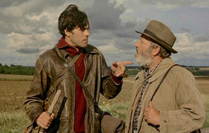
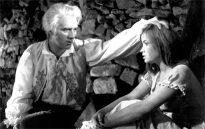
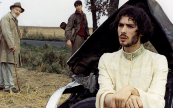
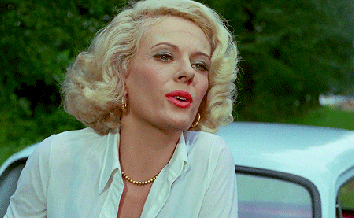
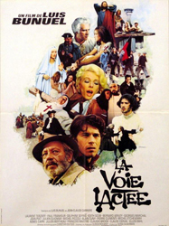
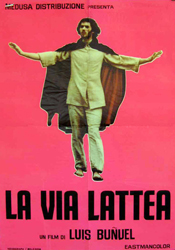
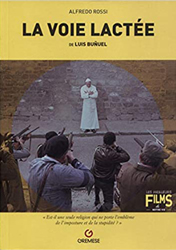
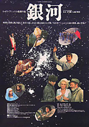
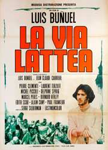

Laurent Terzieff – Jean
Paul Frankeur - Pierre
Michel Piccoli – Marquis de Sade


Pierre Clémenti - The Angel of Death
Delphine Seyrig - The Prostitute

Jesus
French Priest
Brigadier
Maitre d'Hotel
The Jesuit
Two French vagrants, Pierre and Jean, decide to take the pilgrimage route from Paris to Santiago de Compostela along the traditional Way of St. James. As they walk along a roadside in France, they encounter a man in a black cape who tells them to sleep with a prostitute and have children with her, an instance of the prophecy in Hosea. Then the pilgrims reach an inn, they find a police sergeant and a priest discussing the nature of the eucharist and transubstantiation. The priest is taken away by staff from a nearby mental hospital. Later, the pilgrims find shelter for the night on a farm, while a secret Priscillian sect is meeting nearby. Their secret service involves ritual repetition, a short statement of faith, followed by sexual encounters between the male and female congregation.
Next, the pilgrims unsuccessfully seek food from an expensive restaurant, whose manager is explaining to his staff the controversy of the divinity of Jesus Christ as debated during the First Council of Nicaea. Later, the pilgrims pass by a boarding school, and watch the children perform for their parents and teachers. As a class of young girls recites heresies and proclaim them "anathema", one of the pilgrims imagines the execution of a pope by a band of revolutionaries. After they curse a passing car, it crashes and the driver is killed. Investigating the wreckage, they encounter a strange man, the Angel of Death or maybe the Devil, who gives one of the pilgrims the dead man's shoes. At a chapel along the way, the pilgrims encounter a group of Jansenist nuns, who are nailing one of their group to a wooden cross. Outside, a Jesuit and a Jansenist have a sword duel, while arguing over doctrines of predestination and irresistible grace for sinners.
Finally, the two pilgrims reach Spain, where they agree to take care of a donkey for two other men. These new men leave the pilgrims and travel to a nearby abbey where they watch the official desecration of a priest's grave because of the discovery of heretical posthumous writings regarding the nature of the Trinity. The two men proclaim loudly that the Godhead is not trinitarian and escape. In the forest, they switch clothes with some hunters swimming in a lake, and destroy by gunfire a rosary discovered in one of their pockets. Later that night, a vision of the Virgin Mary appears to them and returns the rosary. The two men and the original pilgrims meet again at an inn, where they tell a local priest about their recent miraculous vision. The priest recounts another miracle, in which the Virgin Mary takes the form and duties of an errant nun for several years until the nun returns to the convent as if she had never left. Later that night, the priest further explains how her virginity must have remained intact during both the spiritual conception and the physical birth of Jesus, like "sunshine penetrating a window".
On the outskirts of Santiago de Compostela, the two pilgrims meet a prostitute who wants to become pregnant and gives the same names for the children as those predicted by the man in the cape at the beginning of the film. In the last episode of the film, two blind men encounter Jesus and his disciples. Their blindness is healed but they cannot understand what they are seeing or walk unaided.
Buñuel later called The Milky Way the first in a trilogy (along with The Discreet Charm of the Bourgeoisie and The Phantom of Liberty) about "the search for truth." The title of the film is taken from a popular name used for the Way of St. James, a route often traveled by religious pilgrims that stretched from northern Europe to the Santiago de Compostela in Spain. This is where the remains of St. James were reputed to be buried.
The film follows the picaresque journey of two vagabond travelers, who seem to be making the pilgrimage as a means of escape. Along the way, they witness a series of bizarre incidents that involve persons named in documented heresies in church history. At key moments they encounter Jesus and the Virgin Mary, as well as modern believers and fanatics. The plot is non-linear and functions as a highly symbolic travelogue across time and space, set over the last two thousand years. It encompasses much of Christian history. While using satire to critique religion from a skeptical perspective, it also explores the act of spiritual quest and search for meaning. The highly idiosyncratic film originally met with limited success. However, it is now very well-regarded amongst film enthusiasts and critics.
The Pope being shot by the revolutionaries is played by Buñuel himself.




